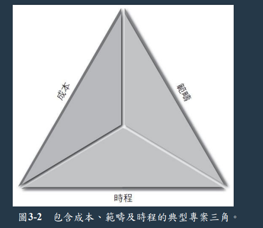
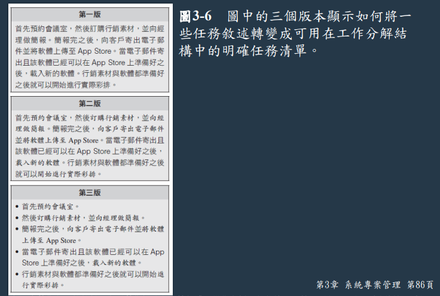
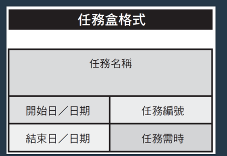
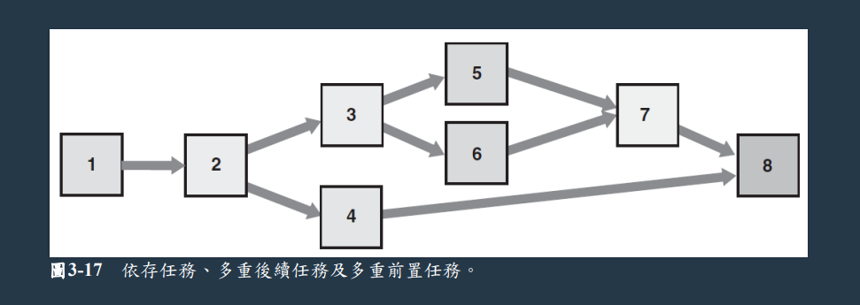

陳杰龍的筆記網站
陳杰龍的筆記網站 主頁
主頁 歸檔
歸檔 分類
分類 其他
其他 關於我
關於我 系統分析與設計- 第三章 系統專案管理
系統分析與設計- 第三章 系統專案管理
筆記說明
此筆記用途在於國立屏東大學資訊管理系大三上系統分析與設計重點整理
並非所有人都適用
如果有侵犯到版權的問題在聯繫我，再聯絡我，我在移除
並非所有人都適用
如果有侵犯到版權的問題在聯繫我，再聯絡我，我在移除
專案管理描述
- 專案管理(project management)是指開發一套資訊系統時所進行的規劃、排程、監督與控制，以及回報等流程
- 專案樣貌，一項成功專案要準時完成、低於預算，提供有品質的系統來滿足消費者需求
- 專案三角(project triangle)，會隨著那邊比重大而改變
- 
- 專案經理的任務
- 專案規劃(project planning)，確認專案任務並估計完成時間成本
- 專案排程(project scheduling)，建立明確時間表顯示任務、任務依存性，以及會造成專案延宕的關鍵任務
- 專案監督 (project monitoring)，引導、監督、協調專案團隊工作負荷
- 專案回報(project reporting)，對主管、使用者及專案團隊本身進行例行性進度報告
建立工作分解結構
- 工作分解結構(work breakdown structure, WBS)是將一個專案拆解成一系列較小的任務
- 甘特圖(Gantt chart)
- PERT/CPM 圖
- 同時使用甘特圖、PERT 圖並不衝突
- 專案評核術 (Program Evaluation Review Technique, PERT) 與 關鍵路徑法 (Critical Path Method, CPM) 已不在被使用
- 確認工作分解結構中的任務
- 任務(task)或活動(activity)是指具有開始與結束時間的任何一項工作、相對小並好管理
- 每項專案都必須要有檢查點
- 確認工作分解結構中的任務
- 列出任務
- 估計任務時間，使用最佳情況估計(best-case estimate, B)、可能情況估計(probable-caseestimate, P)、最差情況估計(worst-case estimate, W)，通常會用此公式預估 (B+4P+W)/6
- 做出估計後，經理分配權重
- 示意圖
 - 影響所需時間的因素
- 專案大小
事情多不多、任務時間 - 人力資源
大家忙不忙、會不會有辭職問題 - 如何預估時間
相似專案的經驗、 直接要求限制
- 專案大小
- 可以透過任務群組的方式，將許多任務進行溝通簡化
任務模式
- 工作分解結構中的所有任務都必須按照任務模式(taskpattern)的邏輯順序來排列
- 以任務盒建立模型
- 任務名稱簡潔且具描述性
- 任務編號必須唯一
- 其他按照字面意思
- 任務盒示意圖
 - 任務模式類型
- 依存任務 (dependent task)，任務必須一個一個完成
- 多重後續任務，類似 tree，可以透過一個任務展開兩個任務
- 多重前置任務，必須要先將前面某些任務完成，才可以進行此任務
- 複雜的任務模式
當加入選多任務後，必須清楚了解邏輯順序，否則沒有效率、不準確 - 任務模式類型示意圖

關鍵路徑
- 關鍵路徑(critical path)是指一連串的任務，假如這些任務延誤了，將會影響整個專案的最終完成日期 必須先決定每項任務的開始與結束日期，才能決定專案的關鍵路徑
專案監督與控制
- 監督與控制技術
- 結構化逐步審查(structured walk-through)是一種將專案團隊成員的工作交由團隊中其他成員進行審查的方式
- 結構化審查在 SDLC(系統發展生命週期) 中會不斷出現
- 設計審查(designreviews)
- 程式碼審查(code reviews)
- 測試審查(testing reviews)
- 保持進度
- 專案很難沒辦法都不延誤、沒遇到問題
- 透過監督與控制工作，來將破壞降至最低
- 任務與關鍵路徑
專案經理會花大部分時間去追縱關鍵路徑上的任務 - 專案狀態會議
- 定期開會討論專案狀態
- 分享問題，討論新技術
- 專案狀態報告
向長官、使用者回報 - 處理問題
風險管理
- 風險管理(risk management)則是一套確認、分析、預估，以及監控風險的流程，使其對專案的影響減到最低
- 風險管理步驟
- 發展一份風險管理計畫(risk management plan)
- 風險確認(risk identification)，可能產生的風險的問題列出
- 質性風險分析(qualitative risk analysis)，評估風險發生的可能性並評估
- 建立風險應對計畫(risk response plan)，對於風險，那我們前置作業要怎麼防範
- 監控風險
專案管理的成功
- 專案經理必須具有高度的警覺性、良好的技術及應變能力，此外也必須具有良好的溝通和交際能力
- 專案問題有這幾種
- 業務問題
- 每一個系統都是為了解決問題
- 專案蔓延(project creep)，專案不斷擴大、變化，到無法控制的地步
- 預算問題，EX:成本超支
- 時程問題，EX:員工離職
- 業務問題